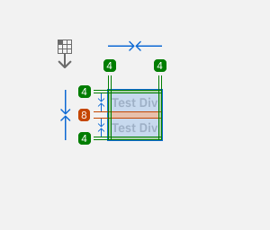

Spacing
Spacing tokens define the padding and gap scales in _variables.scss. Use them to keep layout rhythm consistent across screens.
Token mapping
Padding, gap, and margin tokens are defined in css/helpers/_variables.scss. Use the semantic
names alongside helper classes rather than arbitrary values.
| Token | Value | Aliases | Utility |
|---|---|---|---|
$padding-md |
8px | $padding-8$padding-10$padding-12 |
Use inside cards, buttons, forms |
$gap-lg |
12px | $gap-12 |
Grid and flex gaps |
$margin-xl |
16px | $margin-16 |
Spacing between sections |
$padding-2xl |
20px | (no alias) | Hero or card padding |
Spacing Guidelines
The spacing system provides a shared scale for internal padding and layout gaps. All values are defined as tokens and reused throughout components.
Anatomy
| Element | Description |
|---|---|
| Token name |
Semantic identifier such as $padding-lg, $gap-lg, or
$margin-md.
|
| Value | Pixel value with matching aliases to preserve compatibility. |

Variants
| Scale | Tokens | Notes |
|---|---|---|
| Padding | $padding-* | Used for internal component spacing. |
| Margin | $margin-* | Used for external spacing between components. |
| Gap | $gap-* | Used for layout gaps between elements. |
Token Tables
Spacing - Padding
| Token | Value |
|---|
Aliases such as $padding-8 are listed next to their base token to keep legacy specs aligned.
Spacing - Margin
| Token | Value |
|---|
Spacing - Gap
| Token | Value |
|---|
Tables include semantic tokens plus their matching aliases to stay backward compatible.
Visual
Spacing samples for the padding and gap scales.
Padding scale
Gap scale
Utility Classes
Click any class name to copy it. All classes share the same scale (none, xxs, xs, sm, md, lg, xl, 2xl–11xl) for both horizontal and vertical dimensions.
Gap utilities
Padding utilities
Padding X utilities
Padding Y utilities
Padding Top utilities
Padding Bottom utilities
Margin utilities
Margin X utilities
Margin Y utilities
Margin Top utilities
Margin Bottom utilities
Accessibility
- Use spacing tokens to preserve minimum touch target sizes.
- Maintain consistent gaps so content is scannable for all users.
Usage rules
Padding
- Apply padding tokens inside containers and buttons.
- Favor the base scale and use aliases when matching component specs.
Gap
- Use gap tokens for grid and flex spacing.
- Keep vertical and horizontal spacing aligned to the same scale.
Margin
- Use margin X/Y to separate components; prefer horizontal margins over outer padding.
- Use side/top/bottom margin utilities when you need precise adjustments.
Do and Do Not
Do
- Use tokens to keep spacing consistent across pages.
- Align new components to the existing scale.
Do Not
- Do not introduce arbitrary spacing values.
- Do not mix scales within the same layout region.
DesignOps Governance (PS-Design)
Spacing governance keeps PS-Design spacing tokens and utilities consistent across web and mobile.
Governance Principles
- Single source of truth for spacing scales in _variables.scss and mirrored Figma variables.
- No custom px outside the scale; use padding/gap/margin tokens only.
- Changes to spacing tokens or utilities need explicit approval and migration paths.
- RTL/LTR parity must be verified for every spacing update.
- Bilingual documentation is updated with every scale change.
- Every change is versioned and logged in the changelog.
Model & Boundaries
Federated with a central core: squads apply the existing scale; core approves new spacing tokens/utilities, breaking changes, or exceptions.
Roles (RACI highlights)
- Design System Owner: accountable for spacing scale and escalations.
- DesignOps Lead: governs spacing changes, triage, releases.
- UX Designers: apply the scale, propose spacing adjustments with rationale.
- Frontend Engineers: wire tokens into code, prevent hardcoded values.
- PMs/Stakeholders: justify business need for scale changes.
- QA/Accessibility: verify WCAG, responsiveness, and RTL spacing.
Decision Framework
- Spacing tokens: approval required to add/remove/change values; aliases need review and deprecation plan.
- Spacing utilities (padding/margin/gap): new scale steps or axes need core approval.
- Spacing documentation: guidance updates require DesignOps sign-off for consistency.
- Breaking spacing changes: require migration guide and scheduled release.
Intake & Contribution
Submit via intake form (type, business problem, users, platform, accessibility impact, Figma links, impacted spacing tokens/utilities, urgency). Triage weekly; Sev1 responds in 24h.
Workflow & Gates
- Design: use the spacing scale only; avoid custom px; verify RTL/LTR.
- Review: peer UX → DesignOps → accessibility (WCAG AA) focusing on touch targets and visual rhythm.
- Handoff: spacing token references (padding/gap/margin), Figma captures, and ARIA guidance.
- QA: visual regression, responsive, keyboard, and screen reader smoke for spacing.
Metrics
- Percent of screens using spacing tokens vs hardcoded px.
- Count of spacing deviations (custom values/utilities off-scale).
- Time to approve spacing change from intake to release.
- Accessibility pass rate for spacing on first review.
- RTL vs LTR spacing defect rate.
Code Examples
.card {
padding: $padding-lg;
gap: $gap-lg;
}
.grid {
column-gap: $gap-20;
row-gap: $gap-lg;
}
RTL notes
Spacing tokens are direction-agnostic; classes such as .gap-md or .padding-xxl
work in both RTL and LTR.
- Prefer inline helpers (margin-inline-*, padding-inline-*) when working across directions.
- Keep spacing scale consistent even when the notion of left/right flips.
-
Reuse symbolic names (e.g.,
$gap-lg) in both Arabic and English docs. - Rely on CSS to tie spacing to direction, avoiding inline px-based tweaks.